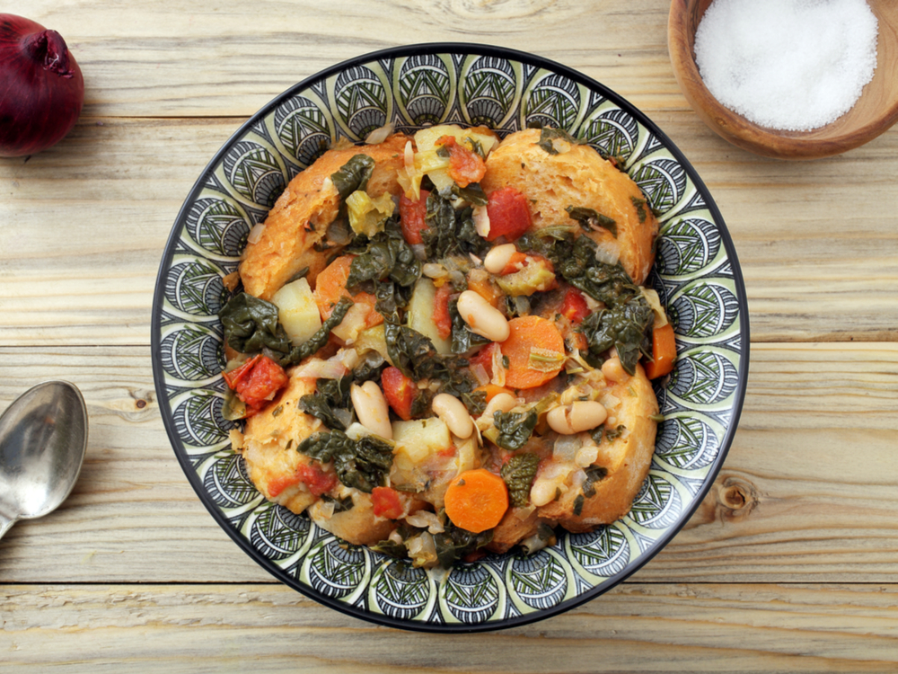

Antipasti e Insalate
Bruschetta
The bruschetta is one of the most famous Italian starters, as it is served in all Italian and international restaurants, and it is considered one of the easy starters, consisting of toasted bread pieces and several ingredients can be placed on top of them. Among the most famous types of bruschetta are those made from sliced tomatoes, pieces of mozzarella cheese, olive oil and basil leaves, called bruschetta pomodor.The white meal can also be placed with smoked salmon slices or smoked meat slices.
Arancini
Aranchini is also one of the famous Italian appetizers, and there are many types of aranchini that differ in shape and fillings, but the most famous of these are balls of rice stuffed with meat sauce or tomato sauce and mozzarella, which is covered with rusk and fried in hot oil until golden in color. It first appeared in Sicily during the tenth century and it was called by this name because it resembles the orange fruit that is called Italian in Arancea.
Pizza
Pizza can be considered the most famous Italian food in the world, but its origins date back to the eastern Mediterranean countries such as Greece and Turkey, where they cooked dough chips on a hot stone and put various ingredients on them like meat and some vegetables. They were discovered by Italian soldiers and taken with them to Italy, and the Italians added tomato sauce and mozzarella cheese to it. The city of Naples is famous for being the origin of Italian pizza and has become internationally known, and pizza can be considered either a main meal or an appetizer.
Zuppe
Minestrone
Minestrone soup is one of the most famous types of Italian soups and consists of pieces of vegetables, such as onions, celery, carrots and tomatoes, to which are added beans, pasta or rice, and sometimes both are added together. There is no specific recipe for minestrone as seasonal vegetables are used, as they can be with or without meat.
Ribollita
Repoleta is one of the best and most famous types of Italian soup, and its origin is due to the Tuscany region, which is known for its delicious dishes. Peasants used to add dry bread to the remaining Minestrone soup, and with the passage of time, this soup became self-contained and became famous throughout Italy.
Acquacotta
Aquacotta soup is one of the most famous and best types of Italian soups, and it consists of pieces of toast, delicious parmesan cheese and some vegetables, such as tomatoes, onions, olive oil and eggs, add a little water and cook over low heat. Porcini mushrooms can be added or any other kind of vegetables, such as celery, potatoes, chard, etc.
Main dishes
Pasta
Macaroni is the second most famous Italian dish after pizza, but as already mentioned, the origin of this dish is due to the far east of Asia, especially to Japan and China where there are manuscripts in which the pasta made from rice dough was mentioned in 3500 BC. It is rumored that the traveler who introduced pasta to Italy was Marco Polo, after traveling to Asia. There are almost more than 350 types of pasta, the most famous of which are spaghetti, interi, toalatelli, lasagna, fettuccine, ravioli, and macaroni that Arabs took to name all kinds of pasta and many others. Many sauces are used with it, either red with tomatoes, white with cream, or green with pesto (basil sauce), and red meat can be added or Poultry, fish, and seafood can also be used as vegetables only, and cheese is often added on top of them, especially parmesan cheese.
Ossobuco
One of the most famous Italian dishes is the Usobuco dish, which dates back to the Lombardy region in northern Italy. And the dish consists of pieces of calf thighs that are seasoned and fried in garrison oil until golden in color, add vegetables and meat broth and cook all on low heat. There are two recipes where tomatoes are used in the new recipe, unlike the old one. Usoboku is often served with melanin or polenta risotto.
Dolce
Tiramisu

The Tiramisu dessert is considered one of the most famous types of Italian sweets and has spread all over the world until it has become served in the most luxurious hotels in the world. The word tiramisu means lift me up to the sky or “delight me” because it gives energy when consumed as it consists of sugar, cocoa powder and coffee.
Gelato
Gelato is an Italian ice cream that is often lighter than other ice creams. It is made from a mixture of milk and sugar. Gelato contains a small amount of air, unlike most other ice creams, which makes it more concentrated. There are many flavors such as those made from fruits, coffee, chocolate and vanilla, but the most famous of them is gelato stratchella made from milk chocolate.